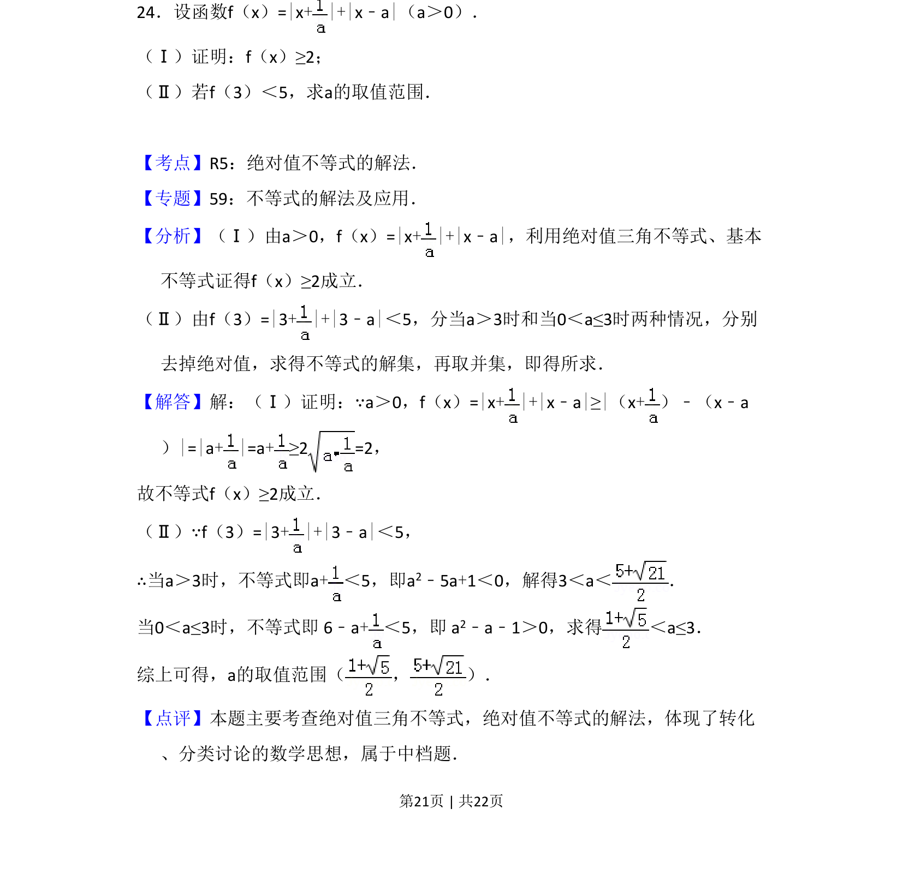
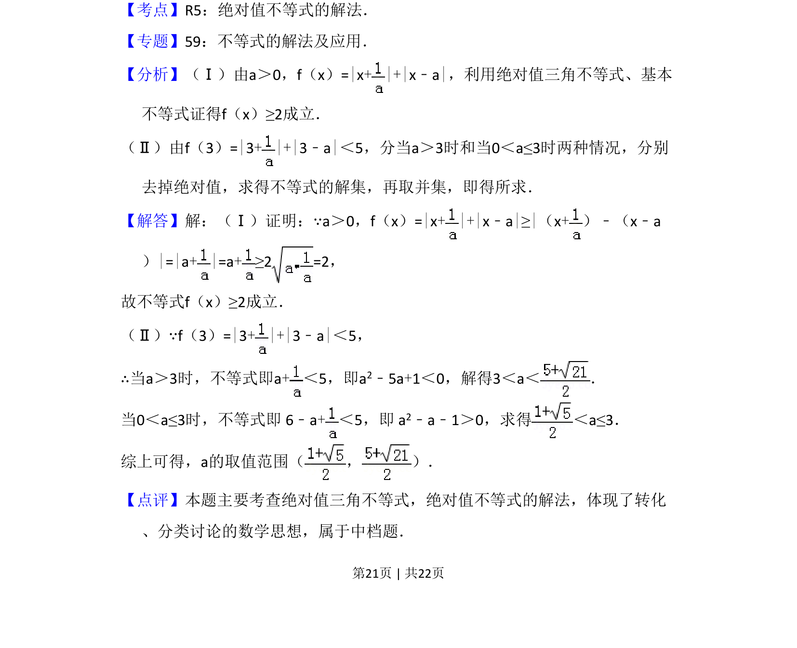

考点：绝对值三角不等式 基本不等式 绝对值不等式 分类讨论

本题考查含双绝对值的函数证明最小值及解含参绝对值不等式，涉及分类讨论。

📄 原 PDF 第 21 页：
素材/真题/吉林/2008-2024·（吉林）数学高考真题/2014年高考数学试卷（文）（新课标Ⅱ）（解析卷）.pdf
24．设函数f（x）=|x+ |+|x﹣a|（a＞0）． （Ⅰ）证明：f（x）≥2； （Ⅱ）若f（3）＜5，求a的取值范围．
【考点】R5：绝对值不等式的解法．菁优网版权所有 【专题】59：不等式的解法及应用． 【分析】（Ⅰ）由a＞0，f（x）=|x+ |+|x﹣a|，利用绝对值三角不等式、基本 不等式证得f（x）≥2成立． （Ⅱ）由f（3）=|3+ |+|3﹣a|＜5，分当a＞3时和当0＜a≤3时两种情况，分别 去掉绝对值，求得不等式的解集，再取并集，即得所求． 【解答】解：（Ⅰ）证明：∵a＞0，f（x）=|x+ |+|x﹣a|≥|（x+）﹣（x﹣a ）|=|a+ |=a+≥2 =2， 故不等式f（x）≥2成立． （Ⅱ）∵f（3）=|3+ |+|3﹣a|＜5， ∴当a＞3时，不等式即a+＜5，即a 2﹣5a+1＜0，解得3＜a＜ ． 当0＜a≤3时，不等式即 6﹣a+＜5，即 a 2﹣a﹣1＞0，求得 ＜a≤3． 综上可得，a的取值范围（ ， ）． 【点评】本题主要考查绝对值三角不等式，绝对值不等式的解法，体现了转化 、分类讨论的数学思想，属于中档题．